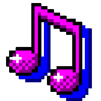
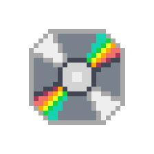

Welcome to the music page!

Music feels very personal to me, but I thought it might be nice to share some of the songs I listen to.
Albums On Repeat

I'm honestly a hater of the playlistification of music, so here are a few albums I really enjoy! Each album has a song I picked out that I either consider my favorite, or I feel as if it best portrays the album as a whole.
A Matter of Time - Laufey
I got to see Laufey (pronounced lay-vey) perform this in concert last year, and it was absolutely amazing. I love this album so much!
Highlighted Song: A Cautionary Tale
Tags: Jazz, Sad Girl Music, Orchestral
To Love in the 21st Centrury: the epilouge - Lyn Lapid
This album presents a linear storyline of the course of a situationship in modern times, presenting yet another reason why the playlistification of music sucks! Anyway, it's peak whimsy.
Highlighted Song: East Side
Tags: Whimsical, Sad Girl Music
Scatterbrain - emei
A good portion of this album is a lot more high energy compared to other songs I listen to, which can be refreshing. It makes me feel very cool, even though I most certainly am not.
Highlighted Song: Cynical
Tags: Angsty
HOT POT! - Mikayla Geier
This artist is so underrated. This album in particular is very weird, but once again in a good way.
Highlighted Song: Pearl of Glue
Tags: Whimsical, Weird